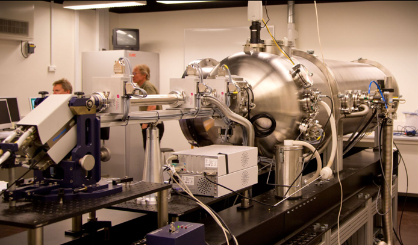

Would you like to do a project with a company? In the LINX (Linking Industry to Neutrons and X-rays) group at University of Copenhagen we work with a variety of companies from Denmark and Scandinavia in different fields, ranging from pharmaceutically relevant macromolecular dispersions, packaging and other plastic materials and food-science related formulations. We use small-angle X-ray and neutron scattering (SAXS, SANS) techniques to characterize the industrial samples on length scales ranging from molecular levels to several microns.
 (Left) SAXS instrument based at the NBI. (Right) ILL (neutron source) and ESRF (synchrotron) in Grenoble, France.
If you would like to help solve industry problems with small-angle scattering techniques you could think about doing a project in the group. The project can be at different levels and durations from a "project outside of course scope" or a bachelors project to a masters project and can be tailored to your skills and interests. The group is headed by Lise Arleth and is part of the X-ray and Neutron Science (XNS) group at the Niels-Bohr institute. You would both learn something about scattering experiments with laboratory equipment and large-scale research facilities (synchrotron and neutron sources) and data analysis, and get experience with working with industry. If you are interested or you have any questions, contact Erik Brok, Gregory Smith or Martin Schmiele. See Group members page. More information on LINX can be found at: